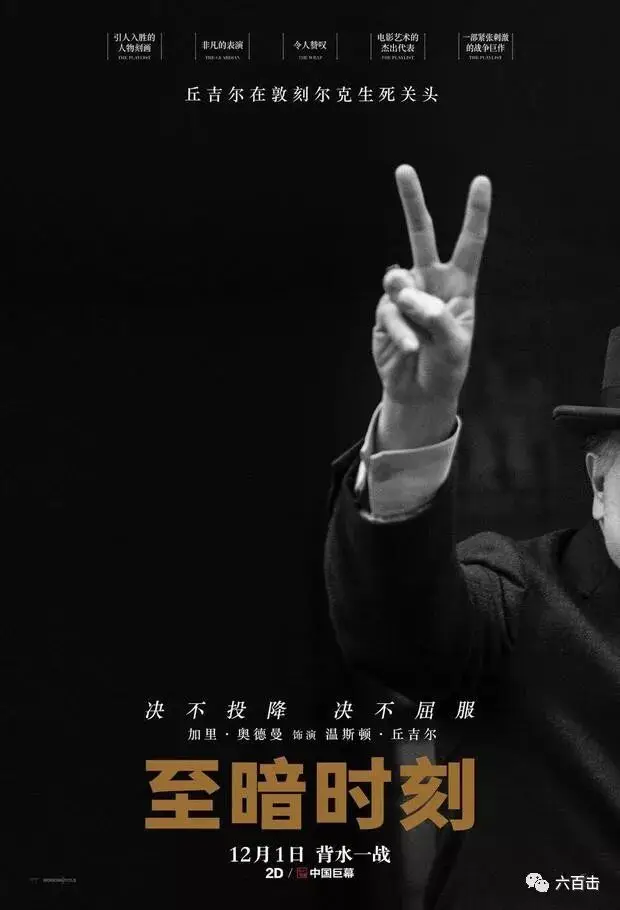
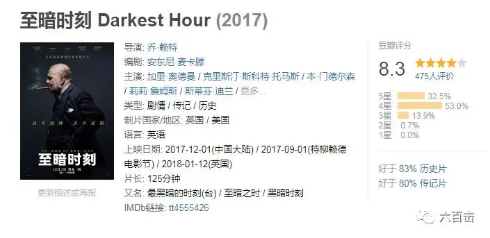
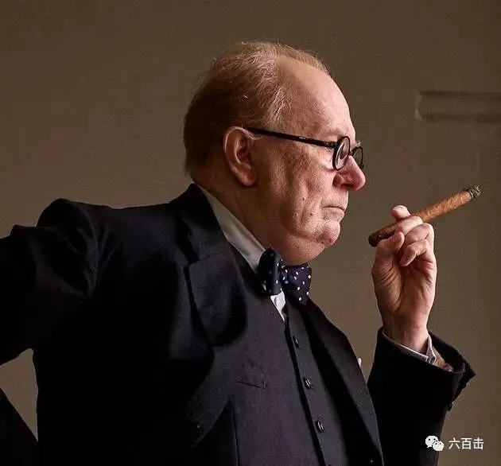
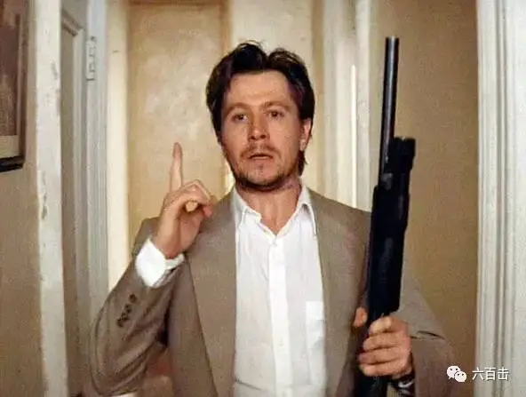
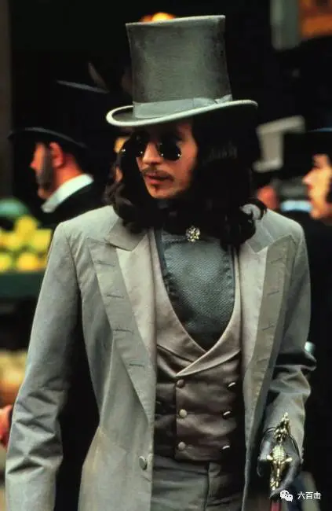
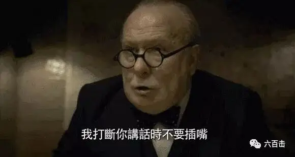
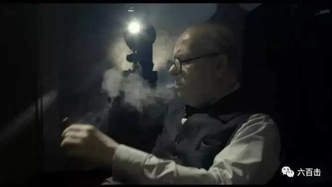

《至暗时刻》预告片
最近暗黑新闻有些让人喘不过气，正好今天《至暗时刻》在大陆上映了
让我们一起看看英国和丘吉尔是如何面对令人窒息的黑暗

电影还原了丘吉尔刚担任英国首相前几周的工作情形：在希特勒强势攻击、盟军屡被战败的局面下，丘吉尔面临着两难的抉择，他必须在与德军求和或率领英国力抗德军之间做出选择。
电影收获了广泛好评，豆瓣评分8.3

烂蕃茄上收集的74篇专业影评文章中，有64篇给出了“新鲜”的正面评价，“新鲜度”为86%，平均得分7.3分
而丘吉尔扮演者加里·奧德曼的表演最引人注目
先来看一下剧照

对比一下，你能认出丘吉尔的饰演者是加里·奧德曼么
那个在《这个杀手不太冷》中一边听着贝多芬音乐，一边疯狂杀人的变态

那个《惊情四百年》中的德库拉伯爵

奥德曼为了匹配丘吉尔的相貌，他在拍摄过程中一共花了200个小时来化妆，还加了假下巴
而相貌相似只是表面功夫，如果你仔细看看剧照中加里·奧德曼的眼睛

你能够感受到丘吉尔那种高度警惕、富有进攻性的眼神
加里·奧德曼完美的诠释了丘吉尔敏锐果断、自负霸道又偶尔来点小幽默的性格
凭着精彩表演，他将获颁第29届棕榈泉国际电影节沙漠棕榈成就奖
电影节主席Harold Matzner表示
“加里·奥德曼在《至暗时刻》里扮演丘吉尔，贡献了年度最佳表演之一。他诠释了一个在二战动荡时期的坚定领袖形象，已经获得了影评人的极佳好评，无疑会引起颁奖季的关注。”
从此他将与卡西·阿弗莱克、杰夫·布里吉斯、布莱德利·库珀、丹尼尔·戴-刘易斯、科林·费斯、马修·麦康纳、西恩·潘、布拉德·皮特、埃迪·雷德梅恩进入同一殿堂
同时，很多影评人认为，奧德曼在片中的表现足以拿下奥斯卡金像奖最佳男主角奖

除了表演，电影的导演乔·莱特也很强大，他曾凭《傲慢与偏见》与《赎罪》两次获得英国电影和电视艺术学院奖项
英国人做事一向严谨，电影对于历史的还原更是精益求精，布景和道具的每一个细节都做到极致，当奥德曼到片场后，他惊奇的发现，就是地图中插的小旗也是和真实情形一模一样
乔.赖特的这次改编可以说非常成功，《卫报》的彼得·布莱德肖称其是“对温斯顿.丘吉尔的一次全新的改编，感人肺腑且独树一格”
电影并没有单纯的表现政治权利斗争，也没有用一场又一场的出席、演讲来单调的铺满整部电影
而是将焦点聚焦在丘吉尔面对困境时的艰难抉择和心路历程
这样的表现充满感性的能量，也更加能够激起观众的情感投入
我们完全可以透过电影和丘吉尔一同面对最黑暗的时刻
在那个时刻，盟军节节败退，英国政府内部争论不休，几乎所有人都丧失信心去与恶魔希特勒斗争
更多的人倾向于与德国和解，继续推行绥靖政策
敏锐的丘吉尔怒斥：“何时你们才能吸取教训，当你已经投入虎口，是没办法跟他讲道理的”
丘吉尔用他的决心和智慧在议院唇枪舌战，这也使得没有战争场景的本片充满了火药味，这种火药味甚至比战场来的更猛烈更动人心脾
因为任何一个决定，都将直接关系到战争的成败，试想一下，如果丘吉尔没有办法使英国内部团结，没有坚决勇敢的对抗邪恶，那么局势将如何发展
真是难以想象？
电影中两场丘吉尔在议院的演讲更是激动人心，丘吉尔在下院通报了敦刻尔克撤退成功，但是也提醒“战争不是靠撤退打赢的。”随后丘吉尔发表了他在二战中最鼓舞人心的一段演说
“我们将战斗到底，我们将在法国作战，我们将在海洋中作战
我们将以越来越大的信心和越来越强的力量在空中作战，我们将不惜一切代价保卫本土
我们将在海滩作战，我们将在敌人的登陆点作战，我们将在田野和街头作战，我们将在山区作战。
我们绝不投降，即使我们这个岛屿或这个岛屿的大部分被征服并陷于饥饿之中
我从来不相信会发生这种情况，我们在海外的帝国臣民，在英国舰队的武装和保护下也会继续战斗
直到新世界在上帝认为适当的时候，拿出它所有一切的力量来拯救和解放这个旧世界”。
总之，这绝对是一部佳作
抛开电影，我们再将目光聚焦在丘吉尔身上
谈到丘吉尔，很多人都会关注他的政治和军事才能
我则更加关注丘吉尔背后的精神资源
何以让丘吉尔对希特勒的邪恶如此敏锐？
何以让丘吉尔在至暗时刻如此勇敢并满怀信心？
其实从上面的演讲中，我们就可以找到答案——那就是上帝。
丘吉尔曾孙强纳森‧桑迪斯为我们还原了一个真实的丘吉尔，他与曾在美国白宫任职的记者华勒斯‧亨利合写的《神与丘吉尔》中回顾了丘吉尔的战时抉择与他的信念根基。
“对战胜希特勒的笃定信念”来源于丘吉尔对于上帝应许的信心
丘吉尔酷爱阅读圣经，他将圣经通读了16遍，他透过圣经了解上帝的性情，他明白善能胜恶，而希特勒是邪恶的，纳粹是邪恶的，他们的行为不是出于神。
他们的目的是要控制人，而基督是叫人得自由。“你们要防备假先知。他们到你们这里来，外面披着羊皮，里面却是残暴的狼。凭着他们的果子，就可以认出他们来。”（马太福音7章15-16节）
丘吉尔亲笔写下：“最科学的观点、最新的观念和最理智的概念，最终都会完全认同圣经的真实性。”
可以说，丘吉尔的胜利，是信仰的胜利，信仰给了他分辨善恶的眼睛，同时也赐给他战胜邪恶的勇气
当我们深处至暗，被现实的冰冷所击垮的时候，我们需要像丘吉尔那样
“我们可放心倚靠在这坚固无比的圣经磐石上。”
这里没有挑逗你眼目情欲的小鲜肉
也没有挑动你肉体情欲的段子
更没有膨胀你今生骄傲的鸡血
我们只在乎那些最质朴真诚的作品
在那里我们才能恢复真正的想象力
我们也坚信这才是我们真正需要的

ID:Six_hundred_hits
长按二维码，一键关注
【六百击】
-END-
电影评论
尽情分享朋友圈

苹果打赏通道